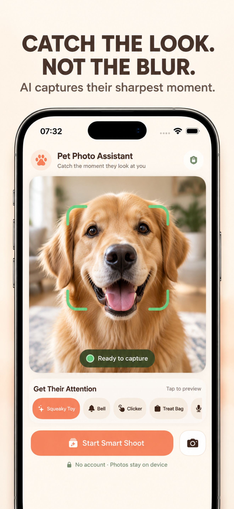
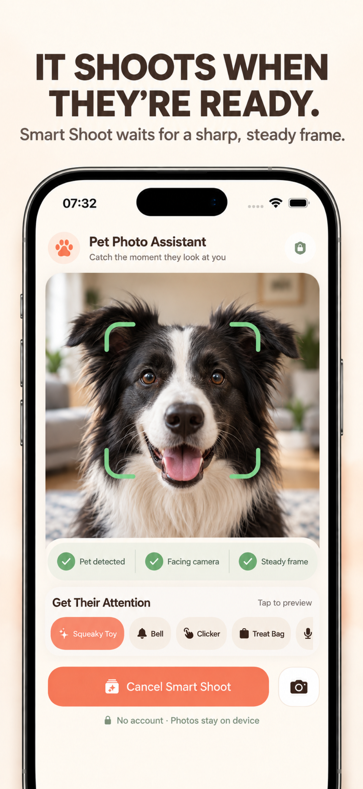
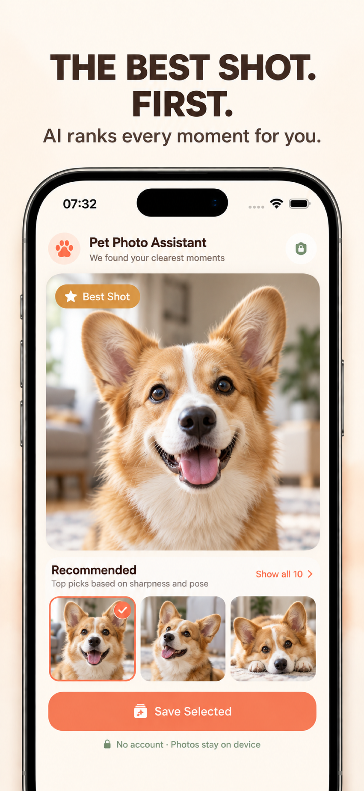
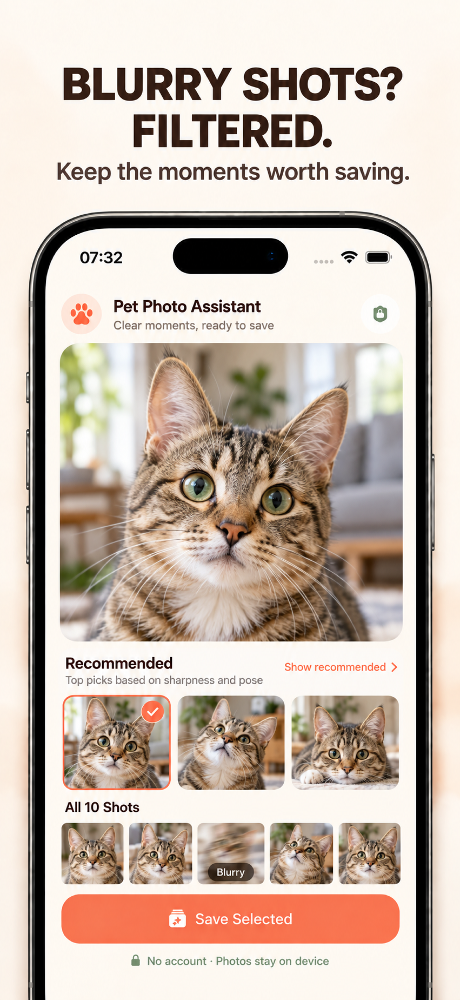

They look away
Your pet turns just as you press the shutter. A short, familiar sound can bring their attention back toward the phone.
A pet camera for iPhone
Get their attention, catch a sharper moment, and spend less time sorting through near-duplicate shots.
Made for pet owners. Smart Shoot is optimized for cats and dogs.

The real problem
The moment rarely waits for you. Pet Photo Assistant is designed around the small failures that turn a great expression into another missed photo.
Your pet turns just as you press the shutter. A short, familiar sound can bring their attention back toward the phone.
Fast motion and an unsteady frame create soft photos. Smart Shoot waits instead of forcing the moment.
Ten similar photos should not mean ten difficult decisions. Best Shot and Top 3 bring the strongest moments forward.
Your pet photos are personal. The analysis happens on your iPhone rather than being sent to a developer server.
One focused workflow
Stay in the camera instead of juggling a sound app, the shutter, and a long camera roll.
Play a squeaky toy, bell, clicker, or treat-bag sound—or record a familiar sound of your own.
For a detected cat or dog, Smart Shoot checks the pose, frame stability, and sharpness before firing.
Start an automatic burst, or use the manual burst button whenever you want full control.
Review Best Shot, Top 3, blur filtering, and quality scores, then save only the photos you select.



Honest about the fit
The app offers a useful camera workflow beyond one kind of animal, while keeping automatic claims grounded in what the current recognition system supports.
Use built-in or custom attention sounds and the manual ten-photo burst when photographing any pet that will not pose on cue.
Automatic recognition, front-facing pose estimation, Smart Shoot timing, and smart ranking are optimized for cats and dogs. Results for other species are not promised.
Private by design
No account, no developer photo upload, and no advertising SDK. You decide which photos are added to your Photos library.
Straight answers
Try a short sound your pet already notices. Pet Photo Assistant includes a squeaky toy, bell, clicker, and treat-bag sound, and lets you record a familiar sound such as their name. Play the sound only when you are ready to photograph so it stays useful.
Pet Photo Assistant's Smart Shoot watches for a detected cat or dog, a usable front-facing pose, adequate sharpness, and a stable frame before starting a ten-photo burst. It estimates a good moment; it does not track exact eye gaze.
Use good light, keep a comfortable distance, and let Smart Shoot wait for a steadier frame. After a burst, the app scores sharpness and pose, recommends the strongest photos, and can keep blurred shots out of the recommended group.
No. Detection, pose checks, sharpness scoring, burst ranking, and blur filtering run on your iPhone. No account is required, and photos are added to your Photos library only after you choose what to save.
Pet owners can use the attention sounds and manual ten-photo burst with other animals. Automatic recognition, pose-aware Smart Shoot, and smart ranking are optimized for cats and dogs, so automatic results for other species are not promised.
Ready when they are
Keep the sound, camera, burst, and photo selection in one private iPhone workflow.